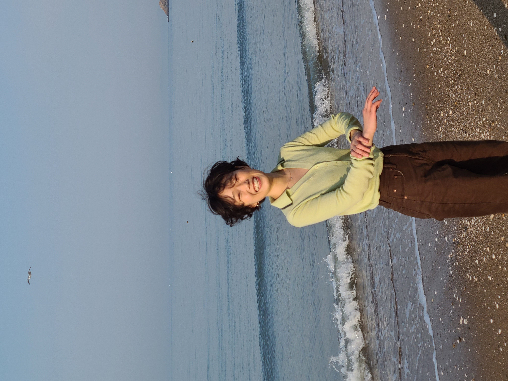

ABOUT
강윤희(b.1996)는 불안과 긴장, 늙어감과 같은 비가시적인 감각을 구조의 문제로 다루는 작업을 한다. 서로 기대고 균열하는 관계 속에서 존재가 사라짐으로 향하는 시간을 탐구하며, 무너지지 않기 위해 버티는 상태를 형태로 드러낸다. 작업 속 감각은 하나의 의미로 고정되기보다 상황에 따라 흔들리고 변화하는 상태로 다뤄진다. 이러한 탐구는 도자를 중심으로 전개된다.
ARTIST STATEMENT
나는 종종 잠이 오지 않는 새벽에 깨어 있는 편이다. 비가 올 것 같은 공기나, 창문을 조금 열어 두었을 때 들어오는 축축한 바람 같은 것들을 오래 바라본다. 그런 시간에는 사람이나 사물의 상태가 평소보다 또렷하게 보인다. 서로 기대고 있는 것들, 금이 가 있지만 아직 무너지지 않은 것들, 가까스로 균형을 유지하고 있는 것들.
내가 쓰는 이야기들도 대부분 그런 장면에서 시작된다. 새벽의 산책, 컵에 떨어지는 물, 먼지를 털어내는 반복적인 몸짓 같은 것들. 그 안에서 사람들은 서로를 지탱하기도 하고, 때로는 서로의 균열을 더 또렷하게 드러내기도 한다.
나는 이런 관계들을 작업에서도 비슷하게 바라본다. 불안이나 긴장, 늙어감과 같은 감각들은 분명 존재하지만 명확한 형태를 가지고 있지 않다. 다만 어떤 구조 속에서 서로 기대고, 밀어내고, 균열을 만들며 오래 버티고 있을 뿐이다.
도자를 중심으로 작업을 하는 이유도 그 때문일 것이다. 흙은 쉽게 무너지지만, 서로 기대면 의외로 오래 버틴다. 불을 지나며 생기는 미세한 균열과 긴장은 내가 글 속에서 오래 바라보던 장면들과 닮아 있다.
그래서 작업 속 형태들은 완전히 안정된 구조라기보다 서로를 밀고 기대며 가까스로 균형을 유지하는 상태에 가깝다. 나는 그 사이에서 만들어지는 긴장과 흔들림, 그리고 무너지지 않기 위해 버티는 시간을 천천히 형태로 남기고 있다.